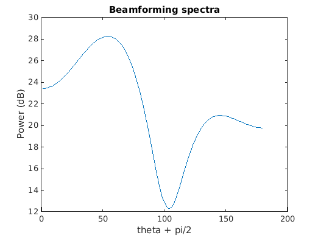
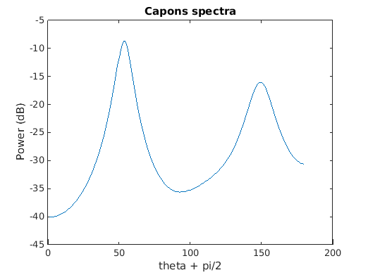

EE 779 : Assignment 3 | Q-2
Meet Pragnesh Shah, 13D070003
Contents
load('../data/submarine.mat');
dl = d/lambda;
Beamforming Method
beamf = beamform(X, 180, dl); fig = figure; plot(20*log10(beamf)) ylabel('Power (dB)') xlabel('theta + pi/2') title('Beamforming spectra')
Capon Method
fig = figure; capon = capon_sp(X, 180, dl); plot(20*log10(capon)) ylabel('Power (dB)') xlabel('theta + pi/2') title('Capons spectra')
Root-Music Estimate
root_theta = root_music_doa(X, 2, dl)
root_theta = -36.9553 53.9747
ESPRIT Estimate
esprit_theta = esprit_doa(X, 2, dl)
esprit_theta = -36.9432 53.7314
Conclusion
Two peaks in the graphs show that there are 2 sources with different DoAs. Thus the two submarines are located at angles of approx -36 degrees and 53 degrees respectively